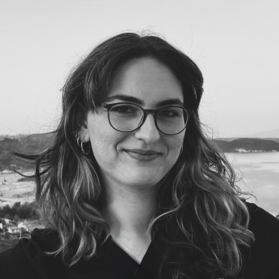

Necef Mengüverdi
Visual Artist

Necef Mengüverdi is a visual artist whose practice explores the intersection of spatial memory, raw materials, and fragmented narratives. Contributing to the 'ardiyé' initiative, her work challenges traditional curatorial boundaries through experimental media.
She focuses on the latent textures within industrial environments, bringing forward the unseen layers of decay and transition. Her projects often remain in a deliberate state of flux, allowing the environment itself to continually shape the outcome of the work.